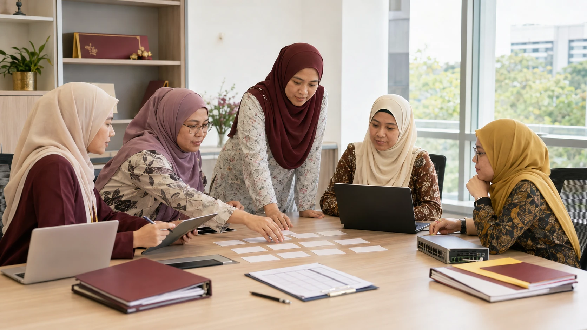

SESI 1 · ASAS & PRODUKTIVITI
AI, Automasi atau Manusia?
Nilai tugasan Sumber Manusia, Sokongan Teknikal dan Pengurusan Akademik sebelum memilih teknologi. Fokus pada manfaat, risiko dan kuasa membuat keputusan.

ARAHAN
Lima langkah membuat keputusan
Kerja berkumpulan. Gunakan data rekaan dan pilih maksimum tiga tugasan risiko rendah untuk percubaan.
Prinsip: AI boleh menyediakan draf atau analisis,
tetapi keputusan berimpak tinggi terhadap staf, pelajar dan
keselamatan sistem kekal di bawah pegawai berkuasa.
1Kad tugas2Klasifikasi3Risiko4Aliran5Keputusan
Bina 12 kad tugasan
Bertindak sebagai fasilitator transformasi kerja Fakulti Komputeran UTM. Hasilkan 12 kad tugasan realistik: empat Sumber Manusia, empat Sokongan Teknikal dan empat Pengurusan Akademik. Setiap kad mengandungi situasi, input, hasil diperlukan, tahap sensitiviti data dan pegawai pembuat keputusan akhir. Gunakan tugasan staf sokongan seperti ringkasan pekeliling, semakan kehadiran agregat, klasifikasi tiket, dokumentasi konfigurasi, pendaftaran kursus dan senarai semak graduasi. Jangan sertakan data sebenar atau jawapan klasifikasi.
Klasifikasikan kaedah kerja
Nilai 12 kad tugasan. Pilih kategori utama: AI GENERATIF, AUTOMASI BERASASKAN PERATURAN, MANUSIA SEPENUHNYA atau GABUNGAN. Hasilkan jadual: tugasan, kategori, sebab, bahagian dibantu teknologi, bahagian yang wajib dikendalikan manusia dan pegawai pelulus. Jangan serahkan keputusan berimpak tinggi kepada AI.
Nilai risiko dan kawalan
Nilai risiko privasi, ketepatan, bias, keselamatan, pematuhan dan reputasi bagi setiap tugasan. Berikan tahap RENDAH, SEDERHANA atau TINGGI dengan justifikasi. Cadangkan kawalan sebelum, semasa dan selepas penggunaan AI. Nyatakan data yang perlu dibuang atau dinyahpengenal, bukti yang mesti dirujuk dan perkara yang wajib disemak manusia.
Bina aliran kerja selamat
Pilih satu tugasan setiap bidang. Bina aliran: Terima input → Klasifikasi data → Sediakan prompt/peraturan → Jana/proses → Semak bukti → Baiki → Kelulusan → Simpan rekod. Nyatakan peranan manusia dan alat pada setiap langkah, kriteria berhenti serta tindakan jika output salah. Jangan andaikan akses kepada sistem dalaman UTM.
Sediakan matriks keputusan akhir
Gabungkan analisis kepada matriks: tugasan, pilihan teknologi, manfaat, risiko utama, data dibenarkan, semakan manusia, pelulus dan keputusan CUBA/KIV/TOLAK. Pilih maksimum tiga tugasan risiko rendah untuk percubaan tujuh hari. Tetapkan ukuran kejayaan: masa dijimatkan, kadar pembetulan, kepuasan pengguna dan bilangan isu. Jangan cadangkan pelaksanaan terus tanpa percubaan terkawal.